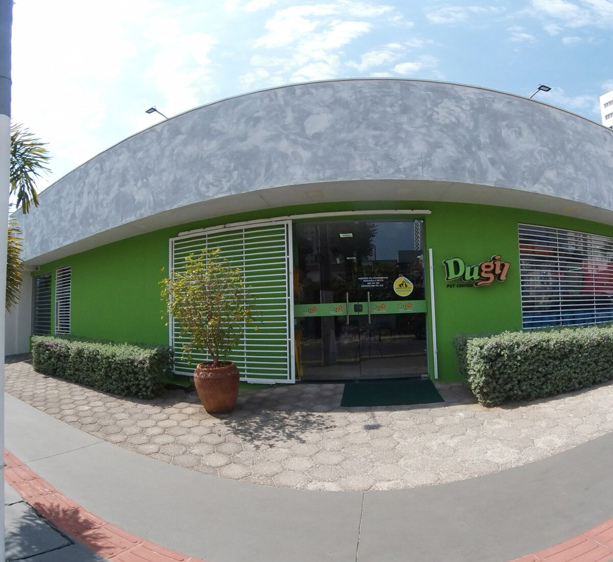
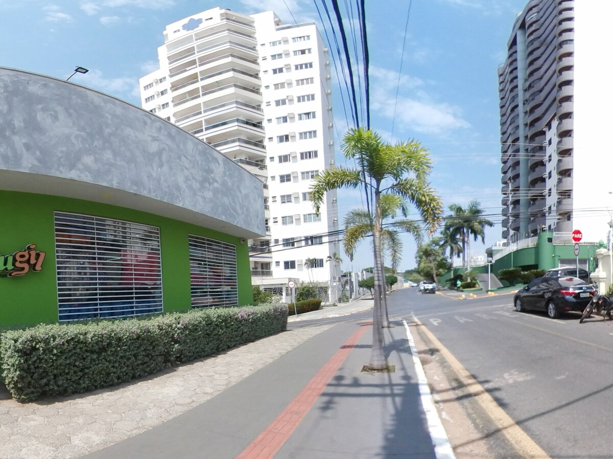
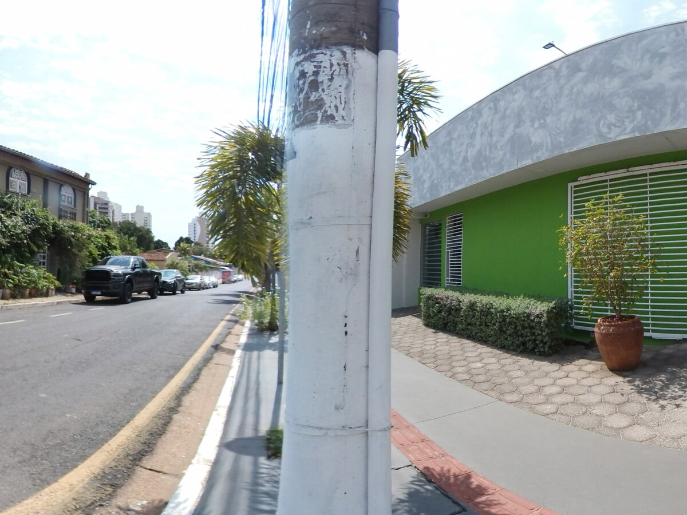

01
Banho & tosa
Higiene e cuidado com atenção ao conforto do pet, em uma rotina feita para ser tranquila.
Consultar agendaPet shop · banho e tosa · veterinário
Uma rotina de cuidado mais leve, atenciosa e prática para quem trata o pet como parte da casa.
Cuidado em um só lugar
A Dugil reúne serviços e produtos para facilitar o dia a dia, com atendimento próximo e uma experiência que prioriza o bem-estar.
Higiene e cuidado com atenção ao conforto do pet, em uma rotina feita para ser tranquila.
Consultar agendaAtendimento para acompanhar a saúde e orientar os cuidados do seu pet com mais segurança.
Pedir informaçõesProdutos para cuidados, higiene e rotina, com variedade para encontrar o que seu pet precisa.
Consultar produtoA experiência Dugil
No Duque de Caxias, a Dugil construiu uma presença local marcada por atendimento próximo. Nas avaliações, clientes destacam carinho, paciência, variedade e a tranquilidade dos pets durante os cuidados.


Passe para o lado

Quem já conhece
“Banho e tosa excepcional, as meninas têm amor e paciência no que fazem e meus pets passam vários dias cheirosos.”
“Uma equipe muito competente e amável. Meus pets amam ir tomar banho lá, vão todas as semanas.”
“Serviço realizado sem estressar o pet.”
“Além da variedade de produtos, o atendimento é excelente.”
Seu pet já tem planos?